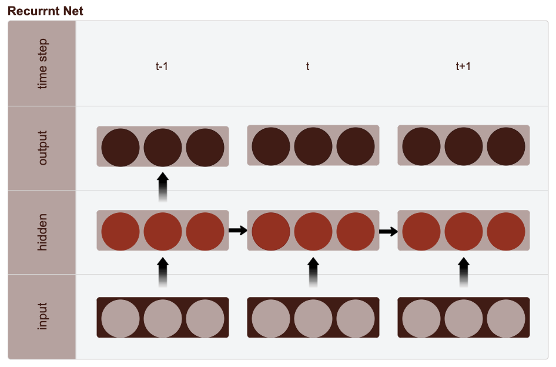
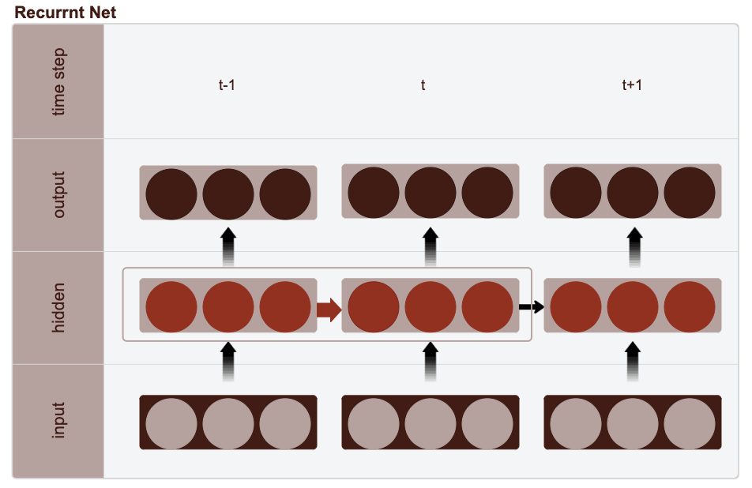
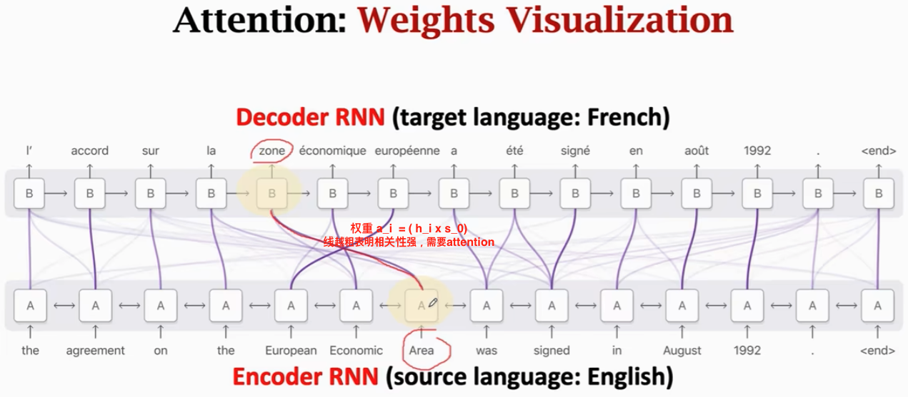

Building a Machine Translation Model: From RNN to Transformer
Machine Translation (MT) models allow us to translate text from one language to another. In this post, we’ll cover:
We’ll also explore decoding techniques like beam search and temperature sampling in RNN, while learning why Transformers have become the preferred approach in NLP.What is Neural Machine Translation?
Neural Machine Translation (NMT) models perform translation by learning to map sentences from one language to another using neural networks. These models power applications like translating web content, enabling multilingual communication, and even generating subtitles for videos.
Seq2Seq Models for Translation
A sequence-to-sequence (Seq2Seq) model is a neural network architecture with an encoder and decoder structure. The encoder reads an input sequence (like a sentence in Spanish) and transforms it into a hidden state captures the essence of that word in the context of the sentence. This hidden representation includes important information about the word’s meaning and its relationships with neighboring words, compressed into a fixed-size vector. that represents its meaning. The decoder then takes this hidden state and generates the translated sentence word by word.
To make things concrete, let’s say we have the sentence
<start> estoy aprendiendo español <end>
(meaning "I am learning Spanish"). The encoder converts each word in the
source sentence into a hidden representation, and the decoder uses these
representations to produce the target translation.
Build RNN Model
A recurrent neural network (RNN) is any network that contains a cycle within its network connections, meaning that the value of some unit is directly, or indirectly, dependent on its own earlier outputs as an input. Feedforward nets can only handle inputs and outputs that have a fixed size. RNNs handles variable length sequences (as input and as output).
-


| Feature | Feedforward Neural Networks | Recurrent Neural Networks (RNNs) |
|---|---|---|
| Data Flow | One direction (input to output, no feedback) | Includes feedback loops, allowing information to persist |
| Sequence Handling | Fixed-size inputs and outputs | Handles variable-length sequences |
| Processing Structure | Processes entire input at once | Processes input step-by-step, one element at a time |
| Hidden State | No hidden state; each input is processed independently | Maintains a hidden state to carry information across time steps |
| Ideal for Sequential Data | Not suitable for sequential data like sentences | Suitable for sequential data (e.g., sentences, time series) |
| Use Cases | Image classification, structured data | Natural language processing, time series forecasting |
Traditional neural networks can’t do this, and it seems like a major shortcoming. For example, imagine you want to classify what kind of event is happening at every point in a movie. It’s unclear how a traditional neural network could use its reasoning about previous events in the film to inform later ones. Recurrent neural networks address this issue. They are networks with loops in them, allowing information to persist.
RNNs, especially GRUs (Gated Recurrent Units) and LSTMs (Long Short-Term Memory networks), are well-suited for handling sequential data. They use their structure to remember past inputs, which is helpful for translation tasks where the next word depends on prior words.
RNN Architecture
- Reading the input sequence in RNN Encoder
- Input layer: Read input
- Hidden layer: Passes its last hidden state to the initial hidden state of the decoder
- With Attention, the Seq2Seq model doesn’t forget the source input, by looking at all the states of the encoder
- With attention, the decoder knows where to focus
- Higher time complexity: m- source sequence length, t- target sequence length
- Standard Seq2Seq has O(m + t) complexity, whereas Seq2Seq + attention has O(mt) complexity
- Generating the output sequence in RNN Decoder
- Input layer: uses different parameters from the encoder, input embeddings
- Recurrence: the hidden state computed at the previous step (h^(t-1)) is fed into the hidden state at the current step (h^t). With H hidden units, this requires additional H^2 parameters
- Each time step corresponds to a feedforward net where the hidden layer gets its input not just from the layer below but also from the activations of the hidden layer at previous step
- Output layer
class RnnEncoder(nn.Module):
def __init__(self, src_vocab, embedding_dim, hidden_units):
super(RnnEncoder, self).__init__()
self.src_vocab = src_vocab
vocab_size = len(src_vocab)
# Initialize embedding layer
self.embedding = nn.Embedding(vocab_size, embedding_dim)
# Initialize a single directional GRU with 1 layer
# hidden_units: The number of features in the GRU hidden state
self.rnn_gru = nn.GRU(embedding_dim, hidden_size=hidden_units, num_layers=1, batch_first=False)
def forward(self, x):
"""
Args: x: source texts, [max_len, batch_size]
Returns:
output: [max_len, batch_size, hidden_units]
hidden_state: [1, batch_size, hidden_units]
"""
output, hidden_state = None, None
sequence = self.embedding(x.long())
output, hidden_state = self.rnn_gru(sequence)
return output, hidden_state
In sequence-to-sequence (Seq2Seq) models, this final
hidden_state is typically passed to the decoder as an initial hidden state. This gives the
decoder
context from
the entire input sentence, enabling it to generate translations or predictions
based
on the full input sequence.
During the forward pass, each token in the input sequence contributes to updating
hidden_state as it moves through the GRU layer.
Next, we will implement a Decoder model that uses an attention mechanism. Why Attention? When I’m translating a sentence, I pay special attention to the word I’m presently translating. When I’m transcribing an audio recording, I listen carefully to the segment I’m actively writing down. Neural networks can achieve this same behavior using attention, focusing on part of a subset of the information they’re given. For example, an RNN can attend over the output of another RNN. At every time step, it focuses on different positions in the other RNN. Here's the summarized benefit of attention in Seq2Seq model:
class RnnDecoder(nn.Module):
def __init__(self, trg_vocab, embedding_dim, hidden_units):
super(RnnDecoder, self).__init__()
# Define Vocabulary and Embedding Layer: Embedding layer converts input tokens
# into vector representations based on the target vocabulary (trg_vocab).
self.trg_vocab = trg_vocab
vocab_size = len(trg_vocab)
self.embedding = nn.Embedding(vocab_size, embedding_dim)
# Attention Layers (W1, W2, final_layer):
# Linear layers W1 and W2 transform decoder hidden states and encoder outputs.
# The final_layer outputs a single attention score per source position.
self.W1 = nn.Linear(hidden_units, hidden_units) #matches the input/output dimension e.g. 512
self.W2 = nn.Linear(hidden_units, hidden_units)
self.final_layer = nn.Linear(hidden_units, 1)
# Initialize a single directional GRU with 1 layer and batch_first=True
# GRU Layer: Single directional GRU layer processes input tokens and their context vector, producing updated
hidden states.
# NOTE: Input to RNN will be the concatenation of your embedding vector and the context vector
self.rnn = nn.GRU(embedding_dim + hidden_units, hidden_size=hidden_units, num_layers=1, batch_first=True)
# Fully Connected Layer: Converts GRU output to predict the next word in the sequence.
self.fully_conn = nn.Linear(hidden_units, vocab_size)
def compute_attention(self, dec_hs, enc_output):
'''
This function computes the context vector and attention weights.
Args:
dec_hs: Decoder hidden state; [1, batch_size, hidden_units]
enc_output: Encoder outputs; [max_len_src, batch_size, hidden_units]
Returns:
context_vector: [batch_size, hidden_units]
attention_weights: [batch_size, max_len_src, 1]
'''
context_vector, attention_weights = None, None
enc_output = enc_output.permute(1, 0, 2) #switch pos
dec_hs = dec_hs.permute(1,0,2) #switch pos
# Attention score formula: (𝐡𝑡,𝐡¯𝑠)=𝐯𝑇𝑎tanh(𝐖1𝐡𝑡 + 𝐖2𝐡¯𝑠)
# Computes attention scores capturing relevance between each decoder hidden state and encoder output.
attention_scores = F.tanh((self.W1(enc_output)) + (self.W2(dec_hs)))
attention_scores = self.final_layer(attention_scores)
# Normalizes attention scores across the source sequence to get attention_weights
attention_weights = F.softmax(attention_scores, dim=1)
# Multiplies attention weights with encoder output and sums across the sequence, creating a context_vector
focused on relevant parts of the input.
context_vector = torch.sum(attention_weights * enc_output, dim=1)
return context_vector, attention_weights
def forward(self, x, dec_hs, enc_output):
'''
This function runs the decoder for a **single** time step.
Args:
x: Input token; [batch_size, 1]
dec_hs: Decoder hidden state; [1, batch_size, hidden_units]
enc_output: Encoder outputs; [max_len_src, batch_size, hidden_units]
Returns:
fc_out: (Not normalized) output distribution [batch_size, vocab_size]
dec_hs: Decoder hidden state; [1, batch_size, hidden_units]
attention_weights: The attention weights have learned; [batch_size, max_len_src, 1]
'''
fc_out, attention_weights = None, None
# Calls compute_attention to get the context_vector and attention_weights for the input sequence.
context_vector, attention_weights = self.compute_attention(dec_hs, enc_output)
# Embeds the current input token into a vector
embedding_vector = self.embedding(x.long())
context_vector = context_vector.unsqueeze(1)
concat_vector = torch.cat((context_vector, embedding_vector), dim=2)
output, dec_hs = self.rnn(concat_vector, dec_hs)
fc_out = self.fully_conn(output.squeeze(1))
return fc_out, dec_hs, attention_weights
def decode_step(self, inputs, enc_output, dec_hs):
'''
Call one step of the decoder.
'''
assert inputs.shape[0] == enc_output.shape[1] == dec_hs.shape[1], 'batch_size must be the same across tensors'
# Calls forward on the last token of the input (inputs[:, -1]) along with encoder output and decoder hidden
state.
# Returns fc_out (word prediction), dec_hs (updated hidden state), and attention_weights.
fc_out, dec_hs, attention_weights = self(inputs[:,-1].unsqueeze(1), dec_hs, enc_output)
return fc_out, dec_hs
forward Function (Single Time Step)
- Attention Mechanism: Allows the decoder to focus on specific parts of the input word sequence by
calculating attention weights, which then form a
context_vectorused in the decoder's prediction.
def self_attention(query, key, value):
attention_scores = torch.matmul(query, key.transpose(-2, -1)) / math.sqrt(query.size(-1))
attention_weights = torch.softmax(attention_scores, dim=-1)
attention_output = torch.matmul(attention_weights, value)
return attention_output

The concat_vector combines two essential pieces of information for generating the next word in a translation.
- First, it integrates the past context from the input sentence, pinpointing which parts of the source (e.g., "el chocolate") are most relevant for producing the upcoming word in the target sentence. This context is captured through the context_vector, emphasizing important words from the input that influence the current step of the decoder.
- Second, the concat_vector includes the current target input via the embedding_vector, representing the current word generated so far in the target sentence, such as "like" in the English translation. This embedding provides a semantic reference for where the translation process is within the target language’s structure.
- Together, these vectors enable the model to make an informed prediction for the next word by synthesizing the most relevant information from both the source sentence and the target sequence generated thus far.
concat_vector into the GRU along with the current hidden state
(dec_hs), producing a new hidden state and generating an output for the next word prediction.
fully_conn to produce
fc_out, the unnormalized word prediction distribution. Each time step in decoding updates the
hidden state and produces the next word,
gradually forming the target sentence.
RNN Training Code Example
def train_rnn_model(encoder, decoder, dataset, optimizer, trg_vocab, device, n_epochs):
for epoch in range(n_epochs):
for src, trg in dataset:
enc_output, enc_hidden = encoder(src.to(device))
dec_hidden = enc_hidden
dec_input = torch.tensor([[trg_vocab.word2idx['<start>']]] * batch_size)
loss = 0
for t in range(1, trg.size(1)):
predictions, dec_hidden, _ = decoder(dec_input.to(device), dec_hidden.to(device), enc_output.to(device))
loss += loss_function(trg[:, t].to(device), predictions.to(device))
dec_input = trg[:, t].unsqueeze(1) # Teacher forcing
batch_loss = loss / trg.size(1)
optimizer.zero_grad()
batch_loss.backward()
optimizer.step()
Decoding with Temperature Sampling and Beam Search
1. Temperature Sampling
Once our RNN model is trained, we can generate translations using temperature sampling. The temperature parameter controls output diversity:
- Low temperature (e.g., T=0.01): The model focuses on high-probability words, producing safer, predictable translations.
- High temperature (e.g., T=2.0): The model selects more diverse words, producing creative but possibly less accurate translations.
2. Beam Search
Beam search decoding refines translations by keeping track of the top K most likely sequences at each step. This way, the model can prioritize probable translations instead of simply choosing the highest probability word at each step.
Transformers
While RNNs process sequences word-by-word, Transformers process entire sentences at once. This allows the model to capture long-distance relationships more effectively and utilize parallelization. Unlike RNNs, Transformers lack an inherent word order. Positional embeddings help Transformers understand the order of words. Each word gets a unique positional encoding that captures its position in the sequence.
Positional encoding formula:
pe[pos, 2i] = sin(pos / 10000^(2i / embed_dim))
pe[pos, 2i+1] = cos(pos / 10000^(2i / embed_dim))
Transformer Encoder
This TransformerEncoder class converts each word in the source sentence into a
dense, contextual representation using self-attention and positional embeddings.
class TransformerEncoder(nn.Module):
def __init__(self, src_vocab, embedding_dim, num_heads, num_layers, dim_feedforward, max_len_src, device,
dropout=0.1):
super(TransformerEncoder, self).__init__()
self.device = device
"""
Args:
num_heads: The number of attention heads
num_layers: the number of Transformer Encoder layers
dim_feedforward: the dimension of the feedforward network models in the Transformer
max_len_src: maximum length of the source sentences
"""
self.src_vocab = src_vocab
src_vocab_size = len(src_vocab)
# Create positional embedding matrix
self.position_embedding = create_positional_embedding(max_len_src, embedding_dim).to(device)
self.register_buffer('positional_embedding', self.position_embedding)
# this informs the model that position_embedding is not a learnable parameter
# Initialize the embedding layer
self.embed = nn.Embedding(src_vocab_size, embedding_dim).to(self.device)
self.dropout = nn.Dropout(dropout)
# Initialize the Encoder model
encode = nn.TransformerEncoderLayer(d_model=embedding_dim, nhead=num_heads,
dim_feedforward=dim_feedforward).to(self.device)
self.encoder = nn.TransformerEncoder(encode, num_layers=num_layers).to(self.device)
def make_src_mask(self, src):
assert len(src.shape) == 2, 'src must have exactly 2 dimensions'
# Transpose the input sequence to shape [batch_size, max_len] and compare with 0 (padding index).
# The result is a Boolean mask where True corresponds to padding positions.
src_mask = src.transpose(0, 1) == 0 # padding idx
return src_mask.to(self.device)
def forward(self, x):
"""
Args: x: [max_len, batch_size]
Returns: output: [max_len, batch_size, embed_dim]
"""
output = None
x = x.long().to(self.device)
word_embeddings = self.embed(x)
positional_embeddings = self.position_embedding[:word_embeddings.size(0), :, :]
embeddings_with_position = self.dropout((embed_p + embed))
# Create a mask to identify padding positions in the input
source_mask = self.make_src_mask(x)
encoder_output = self.encoder(embed, src_key_padding_mask=masked)
return encoder_output
Embedding and Positional Encoding: The embedding layer converts source tokens to dense vectors, while the positional embeddings represent the order of words. These embeddings are summed and passed through a dropout layer to prevent overfitting. Positional embeddings are stored as a buffer to keep them non-trainable, ensuring they only represent positions.
Self-Attention and Transformer Encoder: The main Transformer encoder layer uses
self-attention,
where each word can attend to every other word in the sentence. This is controlled by the multi-head attention
and
feedforward network, allowing complex interactions and dependencies to be modeled across the sequence. The
nn.TransformerEncoderLayer manages these layers within the encoder.
Masking for Padding: The make_src_mask function generates a mask for
padding
tokens, ensuring they are ignored during attention computations. This keeps the attention focused on meaningful
words and avoids noise from padded tokens.
Forward Method: In the forward method, the model first applies
embeddings to the
input, adds positional embeddings, and applies dropout. It then computes the source mask to ignore padding
tokens.
Finally, the encoder processes the embedded and masked inputs, creating contextualized representations for each
word in the source sentence.
Transformer Decoder
Decoder generates the target sequence by taking encoded representations from the encoder and progressively building the output sequence.
class TransformerDecoder(nn.Module):
def __init__(self, trg_vocab, embedding_dim, num_heads,
num_layers, dim_feedforward, max_len_trg, device, dropout=0.1):
super(TransformerDecoder, self).__init__()
self.device = device
"""
Args:
trg_vocab: Vocab_Lang, the target vocabulary
num_heads: The number of attention heads
num_layers: the number of Transformer Decoder layers
dim_feedforward: the dimension of the feedforward network models in the Transformer
max_len_trg: maximum length of the target sentences
"""
self.trg_vocab = trg_vocab
trg_vocab_size = len(self.trg_vocab)
# Create positional embedding matrix
self.position_embedding = create_positional_embedding(max_len_trg, embedding_dim).to(device)
# this informs the model that positional_embedding is not a learnable parameter
self.register_buffer('positional_embedding', self.position_embedding)
self.embedding = nn.Embedding(trg_vocab_size, embedding_dim).to(self.device)
self.dropout = nn.Dropout(dropout)
decoder = nn.TransformerDecoderLayer(d_model=embedding_dim, nhead=num_heads,
dim_feedforward=dim_feedforward).to(self.device)
self.decoder = nn.TransformerDecoder(decoder, num_layers=num_layers).to(self.device)
self.fc = nn.Linear(embedding_dim, trg_vocab_size)
def generate_square_subsequent_mask(self, sz):
"""
Generate a square mask for the sequence. The masked positions are filled with float('-inf').
Unmasked positions are filled with float(0.0).
"""
mask = (torch.triu(torch.ones(sz, sz)) == 1).transpose(0, 1)
mask = mask.float().masked_fill(mask == 0, float('-inf')).masked_fill(mask == 1, float(0.0)).to(self.device)
return mask
def forward(self, dec_in, enc_out):
"""
Args:
dec_in: [sequence length, batch_size]
enc_out: [max_len_src, batch_size, embed_dim]
Returns: output: [sequence length, batch_size, trg_vocab_size]
"""
output = None
dec_in = dec_in.long().to(self.device)
enc_out = enc_out.to(self.device)
embedding = self.embedding(dec_in)
position_embedding = self.position_embedding[:dec_in.size(0), :, :]
position_embedding = position_embedding + embedding
tgt_mask = self.generate_square_subsequent_mask(dec_in.size(0))
output = self.decoder(embedding, enc_out, tgt_mask=tgt_mask)
output = output.to(self.device)
self.fc = self.fc.to(self.device)
output = self.fc(output)
return output
def decode_step(self, inputs, enc_output, dec_hs):
'''
Call one step of the decoder.
Args:
inputs: Input tokens; [batch_size, sequence length]
enc_output: Encoder outputs; [max_len_src, batch_size, embed_dim]
dec_hs: None
'''
inputs = inputs.to(self.device)
enc_output = enc_output.to(self.device)
preds = self(inputs.transpose(0,1), enc_output)[-1]
return preds, None
Embedding and Positional Encoding: Similar to the encoder, the decoder has an
embedding layer to
transform target tokens into dense vectors, and positional embeddings to account for word order in the sequence.
The create_positional_embedding method is used to generate these embeddings, which are added to
word
embeddings for better context representation. This combined embedding is processed with dropout to reduce
overfitting.
Self-Attention and Masking: The generate_square_subsequent_mask
function
creates a
mask for the target sequence to ensure that each token can only attend to previous
tokens in the sequence,
preventing it from "seeing the future" words during training. This mask is passed to the decoder layers, enforcing
a left-to-right attention mechanism necessary for sequence generation.
Decoder Process (Forward Pass): In the forward method, the model
applies
word
embeddings and positional embeddings to the target input sequence, creating a masked sequence. This masked input
is processed by the Transformer decoder layers, and the output is passed through a fully connected layer to
produce final predictions for each position in the target sequence.
Decoding Step: The decode_step method is used for generating output in
an iterative
fashion. It takes in the target inputs, encoded source output, and an optional hidden state (set to
None for the Transformer model). Each decoding step produces a prediction
for
the next word, helping
build the output sequence step-by-step.
The TransformerDecoder enables efficient, context-aware generation by
leveraging self-attention and
positional embeddings, producing accurate translations in machine translation tasks. The combination of masking
and multi-head attention allows it to consider context from previously generated tokens while ensuring the model
does not "peek ahead" in the sequence.
Evaluation with BLEU Scores
We measure the quality of translation with BLEU (Bilingual Evaluation Understudy) scores by comparing model translations to reference translations. BLEU scores assess overlap across sequences:
- BLEU-1: Unigram overlap (single words)
- BLEU-2: Bigram overlap (pairs of words)
- BLEU-3: Trigram overlap (three-word sequences)
- BLEU-4: 4-gram overlap (four-word sequences)
To conclude, RNNs capture sentence order naturally but struggle with long sentences and are slower due to their sequential nature. Transformers use attention and positional embeddings to process full sequences in parallel, capturing long-distance dependencies and enabling faster, more scalable training.